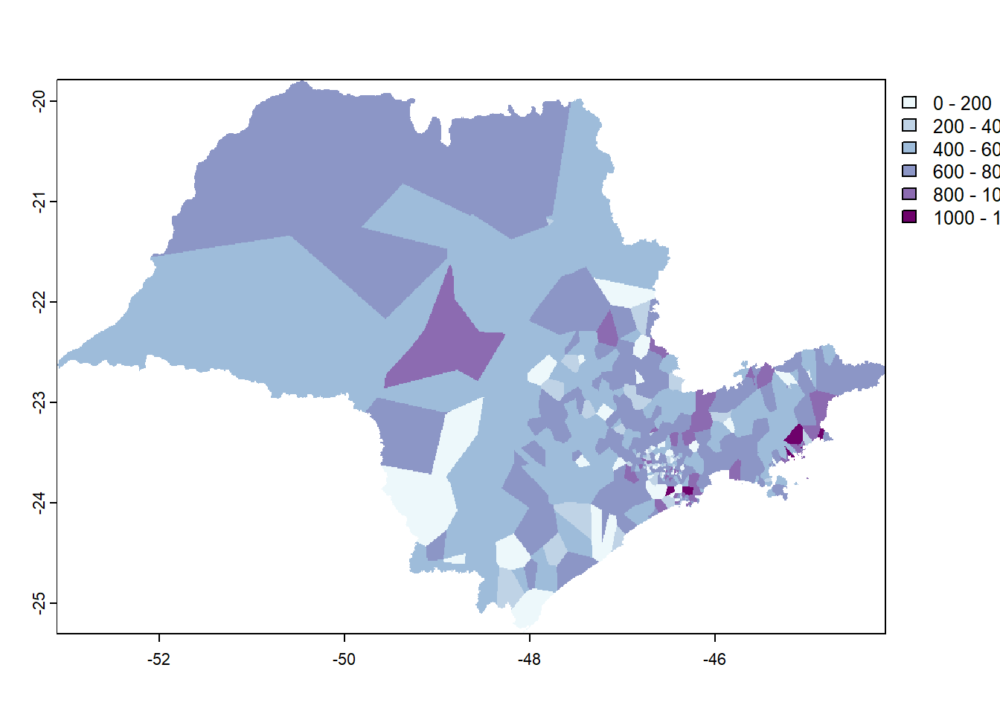
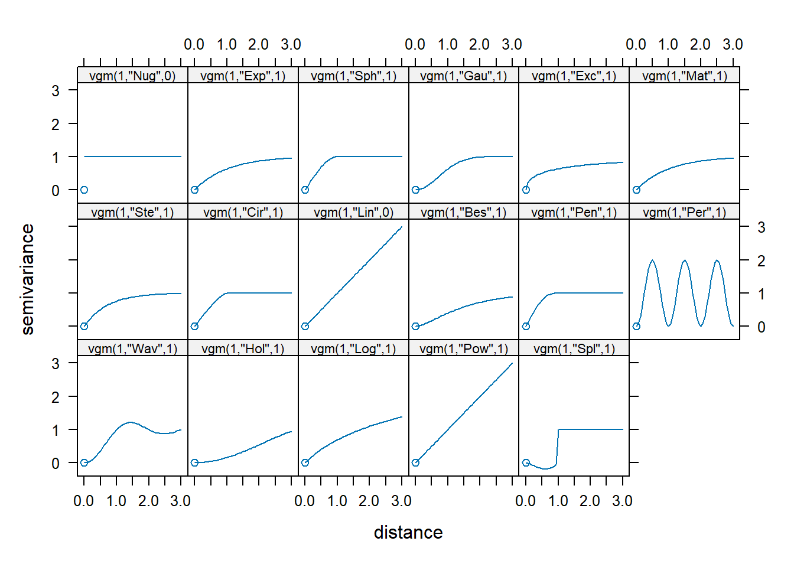

12 Dados quantitativos a partir de amostras: mapa isarítmico
Algumas informações com referência espacial são obtidas a partir de amostras distribuídas no espaço. Tais amostras podem ser pontuais e até mesmo lineares, tais como curvas de nível com valores de altitude ou batimetria. As amostras de pontos são mais comuns e incluem medidas de variáveis atmosféricas, de poluição do ar, amostras de solo, entre outras. Muitas vezes temos interesse em visualizar os valores em área não amostrada, sendo possível recorrermos a modelos matemáticos para gerar interpolações dos valores entre os pontos amostrados, resultando em uma superfície contínua. O mapa resultante é do tipo isarítmico.
A interpolação de dados pode envolver abordagens determinísticas e/ou estocásticas, como veremos mais adiante. Muitas vezes é necessário recorrer à Geoestatística para esta finalidade. A Geoestatística é um ramo da Estatística Aplicada que lida especificamente com dados espaciais e georreferenciados. Ela fornece ferramentas e métodos estatísticos para analisar padrões espaciais, modelar dependências espaciais e realizar previsões ou interpolações em locais não amostrados. Em sua essência, a Geoestatística é mais associada a abordagens estocásticas do que determinísticas. Ela se desenvolveu originalmente para lidar com a variabilidade espacial que muitas vezes não pode ser totalmente capturada por métodos puramente determinísticos. No entanto, é importante destacar que a Geoestatística não é exclusivamente estocástica. Há situações em que abordagens determinísticas podem ser aplicadas (e.g., Superfície de Tendência), dependendo da natureza dos dados, dos objetivos da análise e do contexto específico do problema espacial em questão. Muitas vezes, a escolha entre abordagens determinísticas e estocásticas dependerá das características dos dados e das questões específicas que se deseja abordar. A Geoestatística requer conhecimento aprofundado, o que não será o objetivo deste item. Aqui, em termos de Geoestatística apenas veremos uma técnica mais comumente aplicada, a Krigagem Ordinária. Existem inúmeros livros e cursos sobre Geoestatística que apresentam aprofundamento deste tema. Cito algumas referências interessantes como sugestões de leitura ao final do capítulo.
Para ilustrar a aplicação de algumas técnicas de interpolação espacial, vamos tomar os dados de precipitação durante o verão de 2022 no estado de São Paulo, com 604 estações pluviométricas. Os dados são do CEMADEN (http://www2.cemaden.gov.br/mapainterativo/#) e compreendem o período de 21 de dezembro de 2021 a 20 de março de 2022.
As técnicas de interpolação apresentadas aqui foram baseadas nas propostas por Davis (2023), Fushita & Vasconcelos (2020) e Gimond (2023).
Para darmos início, vamos limpar a memória, verificar e definir o diretório de trabalho.
#para carregar o pacote 'pacman'
library(pacman)
#para carregar os pacotes necessários
pacman::p_load(
tidyverse,
sp,
sf,
exactextractr,
ggplot2,
gstat,
terra,
RColorBrewer)Vamos abrir o arquivo do tipo csv com os dados dos pontos com as informações de latitude, longitude e precipitação total do período de dezembro de 2021 a março de 2022.
#para fazer download dos dados
download.file(url ="https://github.com/ligiaviz/ufsp_prec_verao2022.csv",
destfile = "ufsp_prec_verao2022.csv")#para gerar um objeto 'verao' com os dados
verao <- read_csv("./ufsp_prec_verao2022.csv",
show_col_types = FALSE)## [1] "spec_tbl_df" "tbl_df" "tbl" "data.frame"Para tornar o arquivo de pontos em um objeto do tipo ‘sf’, vamos usar a função st_as_sfdo pacote ‘sf’.
#para transformar em um objeto 'sf'
verao_sf <- st_as_sf(verao,
coords = c("long","lat"))
#para ver as primeiras linhas dos dados
head(verao_sf)## Simple feature collection with 6 features and 2 fields
## Geometry type: POINT
## Dimension: XY
## Bounding box: xmin: -47.87462 ymin: -22.73563 xmax: -46.593 ymax: -22.475
## CRS: NA
## # A tibble: 6 × 3
## estacao prec geometry
## <chr> <dbl> <POINT>
## 1 350050101A 902. (-46.628 -22.475)
## 2 350050102A 877. (-46.593 -22.482)
## 3 350060001A 4.6 (-47.87462 -22.60101)
## 4 350160801A 554. (-47.31487 -22.73563)
## 5 350190501A 715. (-46.818 -22.704)
## 6 350190502A 753 (-46.75368 -22.65991)Como visto, o objeto criado tem CRS indefinido. Vamos definir o CRS da projeção cartográfica de onde os dados foram extraídos - WGS 84 (CRS = 4326).
#para definir a projeção cartográfica (crs=4326) dos dados como disponibilizados pelo CEMADEN
verao_sf <- st_set_crs(verao_sf,
4326)Agora vamos converter o CRS 4326 para 4674 (Sirgas 2000) para ficar compatível com a base do Estado de São Paulo que vamos utilizar.
#para transformar para a projeção SIRGAS 2000 (crs=4674) para ficar compatível com o arquivo do estado de SP que será usado
verao_sirgas <- st_transform(verao_sf,
crs= 4674)Vamos precisar do shapefile do estado de São Paulo, já usado no item {#quanti1}.
#para identificar o url, faca o download do arquivo shapefile e clique em Ctrl+J
download.file(url = "https://repositorio.seade.gov.br/dataset/9bb4f8ef-f1a4-4734-92a2-814cfc8d0974/resource/09ba3695-a6a1-44ab-9916-fd1a8aa1c980/download/populacao.zip",
destfile = "Populacao.zip")Vamos abrir o arquivo do tipo zip.
Na sequência, criamos o objeto ‘ufsp’ usando a função para leitura de arquivo do tipo shapefile. Este arquivo traz a projeção SIRGAS 2000 (crs = 4674).
#para abrir o arquivo shapefile do estado de São Paulo
ufsp <- st_read("C:/Users/l_viz/Documents/RCartoTematica/Populacao.shp")## Reading layer `Populacao' from data source
## `C:\Users\l_viz\Documents\RCartoTematica\Populacao.shp' using driver `ESRI Shapefile'
## Simple feature collection with 645 features and 12 fields
## Geometry type: MULTIPOLYGON
## Dimension: XY
## Bounding box: xmin: -53.10487 ymin: -25.30835 xmax: -44.1634 ymax: -19.78045
## Geodetic CRS: SIRGAS 2000Com os objetos do tipo ‘sf’ compatíveis (ufsp e verao_sirgas), vamos plotá-los usando o pacote ggplot2. Os pontos terão o tamanho 0.4 (Figura 12.1).
#para plotar o mapa
ggplot() +
geom_sf(data = ufsp) +
geom_sf(data = verao_sirgas,
mapping = aes(col = prec),
size=0.4)Figure 12.1: Distribuição dos postos climatológicos e valores de precipitação (mm) no Estado de São Paulo
Para comparar o desempenho dos modelos que usaremos, vamos inicialmente calcular a Raiz do Erro Quadrático Médio (RMSE - Root Mean Squared Error, em inglês), que é uma medida frequentemente usada da diferença entre valores preditos por um modelo ou estimador e os valores observados (da amostra ou da população). Quanto menor o valor do RMSE, mais próximos são os valores previstos e observados. O RMSE é dado por:
\[ RMSE = \sqrt{\sum_{i = 1}^{n}{({z_i} - \bar{z})^2}}{/n} \] onde,
z = valor da variável em questão (precipitação, neste caso),
n = tamanho da população (número de estações pluviométricas).
Para o cálculo do RMSE, vamos usar a função desenvolvida por Davis(2023). Vamos também calcular um “modelo nulo” da precipitação de cada estação comparada com a média de todas as estações. Posteriormente, este resultado será usado para comparar o desempenho das interpolações.
#função para cálculo do RMSE
RMSE <- function(obs, pred) {
sqrt(mean((pred - obs)^2,
na.rm=TRUE))
}
#para gerar um modelo nulo dos dados originais
null <- RMSE(mean(verao_sirgas$prec),
verao_sirgas$prec)
#para visualização do resultado
null## [1] 225.291612.1 Abordagens de interpolação espacial
Interpolar significa estimar valores para locais não amostrados em uma área de estudo, a partir dos valores amostrados. Seguindo a definição de autocorrelação espacial, se os pontos amostrados apresentarem valores semelhantes com a proximidade, seria possível estimar valores para áreas não amostradas a partir da relação entre as distâncias entre os pontos e os valores amostrados.
Essa estimação pode ser feita por métodos determinísticos ou probabilísticos (estocásticos).
Por métodos determinísticos entendemos que são abordagens matemáticas e estatísticas que produzem resultados específicos e previsíveis, sem incorporar aleatoriedade ou incerteza em seus modelos. São interpoladores exatos pois retornam um valor idêntico ao valor medido nos pontos amostrais. As principais características dos métodos determinísticos envolvem:
Previsibilidade: Os métodos determinísticos produzem resultados consistentes e previsíveis, dado um conjunto de entradas ou condições iniciais. Isso significa que, se você tiver as mesmas entradas, obterá os mesmos resultados sempre;
Ausência de Aleatoriedade: Esses métodos não incorporam elementos aleatórios ou estocásticos em seus modelos. As relações entre as variáveis são consideradas fixas e não sujeitas a variações aleatórias;
Equações Matemáticas: Os métodos determinísticos frequentemente se baseiam em equações matemáticas ou modelos matemáticos que descrevem as relações entre as variáveis de interesse;
Precisão: Quando as condições do modelo são atendidas, os métodos determinísticos são precisos e ideais para situações em que a exatidão é fundamental;
Aplicabilidade: Eles são amplamente aplicados em áreas onde as relações entre as variáveis são bem compreendidas e podem ser descritas com precisão por meio de equações matemáticas, como física, engenharia civil, modelagem climática, análise estrutural, entre outras.
No entanto, é importante observar que muitos sistemas do mundo real podem ser afetados por incerteza e variabilidade que não podem ser totalmente capturados por métodos determinísticos. Nessas situações, métodos probabilísticos ou estocásticos, que incorporam elementos aleatórios, podem ser mais apropriados para modelar a incerteza e a variabilidade.
12.1.1 Abordagens determinísticas
Existem inúmeros métodos determinísticos para interpolação. Alguns são globais e outros, locais. As técnicas globais consideram todo o conjunto de dados na análise para a predição da área como um todo (e.g., Superfície de Tendência, Tendência Global - Regressão Linear, entre outros), enquanto as técnicas locais calculam os valores estimados a partir dos pontos e seus vizinhos (e.g., Interpolação por Proximidade: Polígonos de Thiessen, Polígonos de Voronoi; Ponderação pelo Inverso da Distância - IDW; Interpolação Radial; Método da Média Ponderada; Método de Spline, entre outros).
Vamos utilizar algumas técnicas determinísticas de interpolação espacial neste exercício: Interpolação por Proximidade, Interpolação por Vizinho Mais Próximo, Interpolação pela Ponderação pelo Inverso da Distância e Interpolação Global por Superfície de Tendência.
#para identificar o url, faca o download do arquivo shapefile e clique em Ctrl+J
download.file(url = "https://geoftp.ibge.gov.br/organizacao_do_territorio/malhas_territoriais/malhas_municipais/municipio_2020/Brasil/BR/BR_UF_2020.zip",
destfile = "BR_UF_2020.zip")## Reading layer `BR_UF_2020' from data source
## `C:\Users\l_viz\Documents\RCartoTematica\BR_UF_2020.shp' using driver `ESRI Shapefile'
## Simple feature collection with 27 features and 4 fields
## Geometry type: MULTIPOLYGON
## Dimension: XY
## Bounding box: xmin: -73.99045 ymin: -33.75118 xmax: -28.84764 ymax: 5.271841
## Geodetic CRS: SIRGAS 2000Vamos ver a distribuição dos postos climatológicos de forma interativa usando o pacote ‘leaflet’(Figura 12.2).
#para carregar o pacote
library(leaflet)
#para elaborar o mapa
leaflet() %>%
addTiles() %>%
addCircleMarkers(
data = verao_sf, # objeto do tipo 'sf' com os postos e valores
radius = 0.3, # para ajustar o tamanho dos pontos
color = "orange", #para definir a cor laranja do círculo
fillColor = "black", #para definir a cor preta dos pontos
fillOpacity = 0.5 #para definir a transparência do círculo
)Figure 12.2: Distribuição dos postos climatológicos no Estado de São Paulo, de forma interativa
12.1.1.1 Interpolação por Proximidade
Uma das interpolações mais simples. Pode ser gerada a partir de polígonos de Thiessen ou por Polígonos de Voronoi. As duas técnicas dividem o espaço com base na proximidade dos pontos de dados. A diferença principal está na maneira como as células são delimitadas: os polígonos de Voronoi têm bordas equidistantes entre pontos de dados mais próximos, enquanto os polígonos de Thiessen incluem todos os pontos mais próximos a um ponto de dados específico.
Vamos calcular o Diagrama de Voronoi. Cada ponto em um polígono de Voronoi é mais próximo do ponto associado a esse polígono do que de qualquer outro ponto de amostra. Isso cria uma tesselação do espaço onde cada ponto dentro de um polígono de Voronoi é atribuído ao valor do ponto associado a esse polígono.
Este método de interpolação é eficaz quando a distribuição dos pontos de amostra é representativa da variação espacial dos dados. No entanto, pode não ser ideal quando a densidade dos pontos é muito alta ou muito baixa. Além disso, a Interpolação por Polígonos de Voronoi pode produzir resultados descontínuos em locais onde os polígonos se encontram, resultando em superfícies interpoladas com bordas nítidas.
Vamos seguir o roteiro de Davis (2023) para a elaboração de um mapa com base nos polígonos de Voronoi e sua validação. O primeiro passo será gerar um vetor de pontos a partir dos dados de precipitação. Com o vetor, geramos os polígonos de Voronoi e plotamos os resultados (Figura 12.3).
#para gerar um vetor de pontos a partir dos dados de precipitação
veraoV <- vect(verao_sirgas)
#para gerar os polígonos de Voronoi a partir do vetor criado
v <- voronoi(veraoV)
#para plotar os polígonos
plot(v)
#para plotar os pontos sobre os polígonos
points(veraoV)Figure 12.3: Polígonos de Voronoi
Para que a visualização fique mais compreensível, vamos recortar os polígonos gerados, usando os limites do objeto ‘ufsp’. Aproveitamos para criar uma paleta de cores adequada, já que um mapa isarítmico deve ser representado por meio das variáveis visuais valor ou cor ordenada (Figura 12.4). Veja opções de paletas de cores sequenciais em: https://r-charts.com/color-palettes/ e https://pmassicotte.github.io/paletteer_gallery/
#para recortar os polígonos de Voronoi considerando os limites dos municípios de 'ufsp' que contêm estações pluviométricas
vVerao <- crop(v,
vect(st_union(ufsp)))
#para criar uma paleta de cores usando RColorBrewer para 5 cores em blue+purple ("BuPu")
azuis <- brewer.pal(7,
"BuPu")
#para definir as quebras da legenda
breaks <- c(0, 200, 400, 600, 800, 1000, 1200)
#para plotar a precipitação nos polígonos nos municípios, usando a paleta de cores 'azuis'
plot(vVerao,
"prec",
col = azuis,
breaks = breaks)Figure 12.4: Precipitação (mm) segundo polígonos de Voronoi no Estado de São Paulo
Os polígonos podem ser convertidos para uma imagem raster. Para isso, define-se primeiro a resolução espacial do raster, em em seguida, são atribuídos os valores (Figura ??).
#para criar uma imagem raster em branco
r <- rast(vVerao,
res = 0.01)
#para criar a imagem com os dados
vr <- rasterize(vVerao,
r,
"prec")
12.1.1.1.1 Validação cruzada da interpolação por polígonos de Voronoi
Para avaliar o desempenho da interpolação por polígonos de Voronoi, vamos usar a validação cruzada. Esta técnica consiste em particionar o conjunto de dados em subconjuntos mutuamente exclusivos. Em seguida, alguns destes subconjuntos são usados para a estimação dos parâmetros do modelo (dados de treinamento), sendo os subconjuntos restantes (dados de validação) usados para a validação. Existem diversas formas de particionar os dados, tais como: métodos holdout, k-fold e o leave-one-out (KOHAVI, 1995). Aqui, usaremos o método ‘k-fold’.
# validação cruzada usando o método k-fold
k <- 5
#pode ser qualquer número
set.seed(23)
#para gerar números aleatórios entre 1 e 5 do mesmo tamanho dos pontos de entrada de veraoV
kf <- sample(1:k,
size = nrow(veraoV),
replace=TRUE)
#para gerar conjunto em branco de 5 NAs
rmse <- rep(NA,
k)
#função
for (i in 1:k) {
teste <- veraoV[kf == i, ] # divide em k conjunto de pontos,
# (k-1)/k vai para o conjunto de treino,
treino <- veraoV[kf != i, ] # e 1/k vai para teste, incluindo todas as variaveis
#para gerar os valores para o modelo gerado por interpolação Voronoi
v <- voronoi(treino)
v
teste
# para extrair valores do conjunto de dados de treino nos locais do teste
p <- terra::extract(v,
teste)
#para calcular o rmse dos 5 pontos
rmse[i] <- RMSE(teste$prec,
p$prec)
}
rmse## [1] 270.9683 270.8918 295.1786 302.2570 269.3387Foram calculdados 5 valores de RMSE. A média destes valores é mostrada a seguir.
## [1] 281.7269O desempenho do modelo é calculado dividindo-se a média do RMSE pelo rmse do “modelo nulo” da precipitação de cada estação comparada com a média de todas as estações. Subtraindo-se este valor de 1, tem-se o desempenho relativo.
#desempenho relativo do modelo
desemp <- 1 - (mean(rmse) / null)
#para arredondar o resultado
round(desemp,
3)## [1] -0.25Anotamos o valor obtido para posterior comparação com as outras interpolações.
12.1.1.2 Interpolação por Vizinho mais Próximo (Nearest Neighbor)
A ideia central por trás da Interpolação por Vizinho mais Próximo (Nearest Neighbor Interpolation, em inglês) é atribuir ao ponto não amostrado o valor do ponto de amostra mais próximo. Isso significa que não há ponderação pela distância ou outra consideração, apenas uma simples atribuição do valor do vizinho mais próximo.
A Interpolação por Vizinho mais Próximo é frequentemente usada em casos em que a simplicidade é mais importante do que a precisão e em situações em que a variação nos dados é relativamente grande em comparação com a escala dos pontos amostrados.
#para carregar o pacote 'gstat'
library(gstat)
#para criar um dataframe chamado 'd' a partir do vetor de pontos 'veraoV' gerado anteriormente
d <- data.frame(geom(veraoV)[,c("x", "y")],
as.data.frame(veraoV))
#para ver as primeiras linhas do objeto
head(d)## x y estacao prec
## 1 -46.62800 -22.47500 350050101A 901.60
## 2 -46.59300 -22.48200 350050102A 876.60
## 3 -47.87462 -22.60101 350060001A 4.60
## 4 -47.31487 -22.73563 350160801A 553.74
## 5 -46.81800 -22.70400 350190501A 715.47
## 6 -46.75368 -22.65991 350190502A 753.00A função gstatpermite gerar um objeto do tipo lista, definir a fórmula incluindo apenas uma variável (prec~1), as coordenadas geográficas dos pontos, o banco de dados (d), o número máximo de vizinhos e o ‘idp’ (inverse distance power), no caso, igual a zero (idp = 0) para que todos os vizinhos tenham o mesmo peso. O resultado é o mapa da Figura 12.5.
#para criar um objeto gstat do tipo lista e definir as coordenadas e dados
gs <- gstat(formula=prec~1,
locations=~x+y,
data=d,
nmax=5,
set=list(idp = 0))
#para criar a interpolação por vizinho mais próximo a partir imagem raster em branco 'r'
nn <- interpolate(r,
gs,
debug.level=0)
#para recortar com a máscara 'vr'
nnmsk <- mask(nn,
vr)
#para carregar o pacote para definir paleta de cores
library(paletteer)
#para gerar paleta de cores
pal <- paletteer_c("ggthemes::Blue-Green Sequential",
100)
#para plotar
plot(nnmsk,
1,
col = pal)Figure 12.5: Precipitação (mm) segundo Interpolação por Vizinho mais Próximo
12.1.1.2.1 Validação cruzada do modelo por Vizinho mais Próximo
#para gerar o rmse do vizinho mais próximo
rmsevp <- rep(NA, k)
#função
for (i in 1:k) {
test <- d[kf == i, ]
train <- d[kf != i, ]
gscv <- gstat(formula=prec~1,
locations=~x+y,
data=train,
nmax=5,
set=list(idp = 0))
p <- predict(gscv,
test,
debug.level=0)$var1.pred
rmsevp[i] <- RMSE(test$prec,
p)
}## [1] 223.2793#para calcular o desempenho relativo
desemp_vp <- 1 - (mean(rmsevp) / null)
#para arredondar o resultado
round(desemp_vp,
3)## [1] 0.00912.1.1.3 Interpolação pela Ponderação pelo Inverso da Distância (IDW)
Nesta técnica, os valores em um local desconhecido são estimados com base na média ponderada dos valores conhecidos mais próximos, com os pesos atribuídos inversamente à distância entre os pontos de amostra e o local de estimativa. Em outras palavras, os pontos de amostra mais próximos têm um peso maior na estimativa, enquanto os pontos mais distantes têm um peso menor. Se a potência do inverso da distância (idp) for 2, corresponde ao modelo gravitacional Figura 12.6. É possível fazer mapas diferentes variando o valor de ‘idp’ no código a seguir.
#para criar um objeto gstat do tipo lista e definir as coordenadas e dados
gs_idw <- gstat(formula=prec~1,
locations=~x+y,
data=d,
nmax=Inf,
set=list(idp=2))
#para interpolar usando a imagem raster em branco e as definições acima
idw <- interpolate(r,
gs_idw,
debug.level=0)
#para recortar a área com a máscara 'vr'
idwr <- mask(idw,
vr)
#para plotar
plot(idwr,
1,
col = pal)Figure 12.6: Precipitação (mm) segundo Interpolação pela Ponderação pelo Inverso da Distância (IDW)
12.1.1.3.1 Validação cruzada do modelo por Ponderação pelo Inverso da Distância
Seguindo o roteiro anterior, temos:
#para calcular o rmse para a interpolação idw
rmseidw <- rep(NA,
k)
#função
for (i in 1:k) {
test <- d[kf == i, ]
train <- d[kf != i, ]
gsidw <- gstat(formula=prec~1,
locations=~x+y,
data=train,
nmax=5,
set=list(idp = 0))
p <- predict(gscv,
test,
debug.level=0)$var1.pred
rmseidw[i] <- RMSE(test$prec, p)
}## [1] 41.96665#para calcular o desempenho relativo
desemp_idw <- 1 - (mean(rmseidw) / null)
#para arredondar o resultado
round(desemp_idw,
3)## [1] 0.81412.1.1.4 Interpolação global por Superfície de Tendência
A interpolação de tendência se concentra em modelar tendências ou padrões globais nos dados espaciais. A interpolação de tendência assume que os dados espaciais estão relacionados a uma função matemática subjacente que descreve a tendência geral dos valores em uma área geográfica. Serve para termos uma ideia da tendência geral dos dados e observar a direção de seu gradiente (Figura 12.7).
#para gerar o objeto gstat
gs_tend <- gstat(formula=prec~1,
locations=~x+y,
degree=1,
data=d)
#para interpolar os valores
tend_interp <- interpolate(r,
gs_tend,
debug.level=0)
#para recortar o objeto com a máscara de SP
tend_mask <- mask(tend_interp,
vr)
#para plotar o mapa
plot(tend_mask,
col = pal,
1)Figure 12.7: Precipitação (mm) segundo Interpolação global por Superfície de Tendência
No caso da interpolação por Superfície de Tendência não faz sentido avaliar seu desempenho por validação cruzada dado o seu objetivo de observação geral da tendência dos dados.
12.1.2 Abordagens Estocásticas
Abordagens estocásticas para interpolação de dados espaciais incorporam o conceito de incerteza nos dados interpolados. Essas abordagens consideram que as relações espaciais são aleatórias e podem variar. Alguns métodos estocásticos comuns incluem: Krigagem, Simulação Condicional, Processos Pontuais Marcados, Redes Bayesianas Espaciais; Bootstrap Espacial. Aqui ficaremos apenas com a Krigagem Ordinária.
12.1.2.1 Krigagem Ordinária
É um interpolador de abordagem estocástica, pois leva em consideração a incerteza associada às estimativas interpoladas.
Antes de iniciar a análise, no entanto, é necessário verificar se algumas premissas são respeitadas:
os dados precisam ter distribuição normal;
os dados precisam ser estacionários;
os dados não podem ter tendência.
Passo 1: Distribuição Normal
Vamos olhar a distribuição da variável ‘prec’ elaborando um histograma (Figura 12.8).
#para carregar o pacote
library(rcompanion)
#para plotar o histogram
plotNormalHistogram(verao$prec)Figure 12.8: Histograma da variável precipitação
Vamos olhar também o qq-plot (Figura 12.9).
#para plotar o qq-plot
qqnorm(verao$prec,
ylab="Precipitação")
#para adicionar a linha
qqline(verao$prec, col="red")Figure 12.9: Q-q plot da variável precipitação
Os gráficos obtidos sugerem que a distribuição não é normal e que uma transformação da variável ‘prec’ é necessária. Vamos utilizar o pacote ‘bestNormalize’ para isso.
#para carregar o pacote que faz a normalização dos dados
library(bestNormalize)
#para gerar o modelo normal
modelo_normal = bestNormalize(verao$prec)
#para ver o resultado
modelo_normal## Best Normalizing transformation with 604 Observations
## Estimated Normality Statistics (Pearson P / df, lower => more normal):
## - arcsinh(x): 12.4803
## - Center+scale: 2.1046
## - Double Reversed Log_b(x+a): 1.5224
## - Log_b(x+a): 17.4268
## - orderNorm (ORQ): 1.0904
## - sqrt(x + a): 4.1159
## - Yeo-Johnson: 1.8333
## Estimation method: Out-of-sample via CV with 10 folds and 5 repeats
##
## Based off these, bestNormalize chose:
## orderNorm Transformation with 604 nonmissing obs and ties
## - 580 unique values
## - Original quantiles:
## 0% 25% 50% 75% 100%
## 0.000 505.500 626.090 737.378 1294.680De forma automática, a função do pacote ‘bestNormalize’ escolheu a transformação com o menor valor (orderNorm Transformation) (Figura 12.10).
Figure 12.10: Histograma da variável precipitação transformada
Vamos precisar retornar ao valor original posteriormente para elaborarmos o mapa com os valores originais de precipitação e não com os desvios-padrão. Assim, já vamos gerar um objeto retornando aos valores originais também.
#para desnormalizar a variável para quando for fazer o mapa final
prec_original <- predict(modelo_normal,
newdata = modelo_normal$x.t,
inverse=TRUE)Passo 2: Estacionaridade
Estacionaridade significa que a variação local não muda nas diferentes áreas do mapa. Por exemplo, 2 pontos distantes 10 metros em diferentes locais devem ter diferenças similares do valor medido (e.g., precipitação). Isto pode ser analisado a partir do mapa de Voronoi que já elaboramos.
Passo 3: Remoção da tendência do mapa e ajuste do variograma
Para remover a tendência do mapa, calculamos uma equação polinomial de 1ª ordem que será utilizada durante a interpolação por krigagem.
#para carregar os pacotes
library(sf)
library(spatstat)
# para definir a equação polinomial de 1ª ordem
f.1 <- as.formula(modelo_normal$x.t ~ X + Y)
# para adicionar as colunas X e Y no objeto 'verao_sf'
verao_sf <- verao_sf %>%
mutate(X = unlist(map(verao_sf$geometry,1)),
Y = unlist(map(verao_sf$geometry,2)))Utilizamos um variograma (Figura 12.11) como um modelo gráfico para analisar a estrutura de dependência espacial em um conjunto de dados espacialmente distribuídos. Ele descreve como a variabilidade entre observações muda com a distância entre essas observações. Permite avaliar a autocorrelação espacial.
Figure 12.11: Variograma
Ao analisar o variograma, podemos inferir informações valiosas, como:
Alcance (Range): A distância a partir da qual a autocorrelação espacial não é mais significativa.
Efeito pepita (Nugget): A variabilidade que é inerente à escala menor que o espaçamento entre as amostras, muitas vezes associada a variação microscópica ou erro de medição.
Patamar (Sill): onde a variância atige 95% de seu máximo.
O variograma é uma ferramenta importante para modelagem espacial em geostatística, especialmente em técnicas como a krigagem, que é um método de interpolação espacial que utiliza informações do variograma para estimar valores desconhecidos em locais não amostrados.
Este modelo se constitui na curva da função de variância γ(h) dos dados, onde h é um intervalo de distância até uma origem arbitrária. A relação matemática é dada por (FERREIRA, 2014):
\[ γ(h) = ½n \sum_{i = 1}^{n}(Z_{i_+h} - Z_i)^2 \]
Onde,
n é o número de pares de Z comparados;
Z é uma variável aleatória distribuída na superfície S que assume o valor zi na posição xi e zi+h na posição xi+h.
Vamos adaptar a explicação de Ferreira (2014) de acordo com os dados do nosso exemplo. Considerando a precipitação em mm durante o verão de 2022 no estado de São Paulo, se tomarmos o valor zi = 642 mm e zi+1000m = 694 mm, significa que enquanto em um ponto i do estado a precipitação foi de 642 mm, em outro ponto distante 1000m de i (h = 1000m), a precipitação foi de 694 mm. Esta equação é usada para gerar o variograma em nuvem.
Vamos ver a lista de modelos disponíveis no pacote ‘gstat’.
## short long
## 1 Nug Nug (nugget)
## 2 Exp Exp (exponential)
## 3 Sph Sph (spherical)
## 4 Gau Gau (gaussian)
## 5 Exc Exclass (Exponential class/stable)
## 6 Mat Mat (Matern)
## 7 Ste Mat (Matern, M. Stein's parameterization)
## 8 Cir Cir (circular)
## 9 Lin Lin (linear)
## 10 Bes Bes (bessel)
## 11 Pen Pen (pentaspherical)
## 12 Per Per (periodic)
## 13 Wav Wav (wave)
## 14 Hol Hol (hole)
## 15 Log Log (logarithmic)
## 16 Pow Pow (power)
## 17 Spl Spl (spline)
## 18 Leg Leg (Legendre)
## 19 Err Err (Measurement error)
## 20 Int Int (Intercept)Vamos ver os modelos possíveis de serem ajustados na análise do variograma.

Vamos começar a análise dos dados de precipitação gerando um variogram de nuvem (Figura 12.12).
#para calcular o variograma em nuvem
var_nuvem <- variogram(modelo_normal$x.t ~ 1, verao_sf, cloud = TRUE)
#para plotar o variograma
plot(var_nuvem)Figure 12.12: Variograma em nuvem da precipitação
O variograma da amostra representa a média do variograma em nuvem segundo intervalos de distâncias, facilitando a identificação do modelo mais adequado. Vamos gerar o variograma da amostra dos dados (Figura 12.13).
#para gerar o variograma da amostra
var_amostra <- variogram(modelo_normal$x.t ~ 1, data = verao_sf)
#para plotar
plot(var_amostra)Figure 12.13: Variograma da amostra
Com o modelo para a remoção de tendência (f.1), vamos calcular o variograma usando os dados normalizados e sem tendência. A partir da visualização do variograma da amostra, definimos alguns valores iniciais: sill parcial (psill) = 1.05, modelo = Ste, alcance (range) = 5 e efeito pepita (nugget) = 0.01 (Figura 12.14).
#para definir o modelo inicial
var_inicial <- vgm(psill = 1.05,
model = "Ste",
range = 5,
nugget = 0.01)
#para visualizar o modelo teórico e os dados
plot(var_amostra,
var_inicial,
cutoff = 50,
cex = 0.8)Figure 12.14: Variograma inicial
É sempre importante avaliar se a anisotropia é relevante. Anisotropia pode ser avaliada pela visualização de variogramas em diversas direções. Aqui, vamos olhar os ângulos 0 (Norte), 45 (Nordeste), 90 (Leste), 135 (Sudeste) (Figura 12.15).
#para ajustar o modelo em 4 direções
var_ani <- variogram(modelo_normal$x.t ~ 1,
data = verao_sf,
alpha=c(0, 45, 90, 135),
cutoff=50)
#para plotar os variogramas
plot(var_ani,
var_inicial)Figure 12.15: Variogramas em diferentes direções
O modelo para a direção Norte parece ter um ajuste melhor, embora a anisotropia não pareça ser muito relevante no conjunto de dados. Como observamos tendência geral, vamos considerá-la no modelo para interpolação da precipitação. Assim, vamos gerar o modelo sem tendência, usando o modelos f.1 (Figura 12.16).
#para calcular o variograma sem tendência, usando o modelo f.1
var.smpl <- variogram(f.1,
verao_sf,
cloud = FALSE,
cutoff=50,
width=0.5)
#para ajustar o modelo usando valores aproximados de psill, range e nugget
dat.fit <- fit.variogram(var.smpl,
fit.ranges = FALSE,
fit.sills = FALSE,
vgm(psill=1.0,
model="Ste",
range=3.1,
nugget=0.15))
#o gráfico a seguir ajuda a avaliar o ajuste
plot(var.smpl,
dat.fit,
xlim=c(0,50))Figure 12.16: Variograma do modelo ajustado
O pacote ‘spatstat’ tem uma função para o cálculo automático do melhor ajuste. Ele deve sempre ser usado com cautela. É indicado sempre olhar os dados antes de fazer o ajuste automático (Figura 12.17).
#para fazer o ajuste automático
dat.fit.auto = fit.variogram(var.smpl,
dat.fit)
#para plotar o variograma
print(plot(var.smpl,
pl = T,
model = dat.fit.auto))Figure 12.17: Variograma do modelo com ajuste automático
Para ver os parâmetros do ajuste automático.
## model psill range kappa
## 1 Nug 0.6709153 0.000000 0.0
## 2 Ste 0.4698257 5.778978 0.5Passo 4: Krigagem Ordinária
Agora com o modelo ajustado, partiremos para a interpolação. Primeiro geramos uma grade do tamanho do objeto ‘ufsp’ para que a interpolação seja feita na área toda (Figura 12.18).
#para carregar o pacote 'stars'
library(stars)
# para criar a grade
grade = st_as_stars(st_bbox(st_buffer(ufsp,
0.001)))
# modelo de interpolação
kr <- gstat(formula=modelo_normal$x.t~1,
data=verao_sirgas,
model=dat.fit.auto)
# Interpolação
z = predict(kr,
grade)## [using ordinary kriging]library(colorspace)
# para criar um vetor de cores usando hcl.colors()
cores <- hcl.colors(5,
"YlGnBu")
# para inverter a ordem das cores usando rev()
cores_invertidas <- rev(cores)
# Especificar o número desejado de intervalos
numero_intervalos <- 5
# Calcular os intervalos de classes
intervalos_classes <- cut(z$var1.pred,
breaks = numero_intervalos)
#para plotar
plot(z,
col = cores_invertidas,
breaks = c(-0.8233357, -0.383, 0.0564, 0.492, 0.936, 1.376089),
reset = FALSE)Figure 12.18: Resultado da interpolação por Krigagem Ordinária, com valores transformados
Vamos visualizar também a variância da predição, ou seja a espacialização da incerteza. O mapa da variância mostra os locais onde o erro foi menor (valores mais baixos) e onde foi maior (valores mais altos) (Figura 12.19).
# Calcular os intervalos de classes
intervalos_classes <- cut(z$var1.var, breaks = numero_intervalos)
#para plotar o mapa da variância
plot(z["var1.var"],
col = cores_invertidas,
breaks = c(0.817, 0.878, 0.938, 0.999, 1.06, 1.12),
reset = FALSE)
Figure 12.19: Variância da interpolação por Krigagem Ordinária
Agora, vamos retornar aos valores originais, antes da normalização da variável (Figura 12.20).
#para retornar aos valores originais
z$original <- predict(modelo_normal,
newdata=z$var1.pred,
inverse=TRUE)
#para plotar os valores originais
plot(z["original"],
col = cores_invertidas,
reset = FALSE)
plot(st_geometry(ufsp),
add=TRUE)Figure 12.20: Resultado da interpolação por Krigagem Ordinária, com valores originais
Como vemos, a escala de cores não está correta e faltam muitos detalhes para termos um mapa isarítmico finalizado. Vamos converter os objetos do tipo ‘stars’ para formato raster para podermos usar o ‘ggplot2’ para a elaboração do mapa final. Em seguida, exportamos o mapa em formato jpg.
#para converter como raster
prec_raster <- st_as_stars(z)
#para recortar o raster
prec_ufsp <- st_crop(prec_raster,
ufsp)Usando o ‘ggplot2’, elaboramos o mapa interpolado com a camada dos municípios do estado de São Paulo, escala gráfica, título e outros elementos.
#para carregar os pacotes
library(ggplot2)
library(ggspatial) #pacote que permite colocar escala gráfica
# para gerar o mapa
mapa_prec_verao <- ggplot() +
geom_stars(data = prec_ufsp,
aes(fill = original)) +
scale_fill_continuous_sequential(palette = "BuPu",
na.value = "grey95")+
geom_sf(data = UFBR,
colour = "grey50",
alpha = 0)+
labs(
fill = "Precipitação (mm)",
caption = "Fonte: CEMADEN (2023) \n Elaborado por: @Ligiaviz"
) +
geom_sf(data = ufsp,
colour = "grey50",
alpha = 0) +
xlab(NULL) +
ylab(NULL) +
theme(legend.position = c(0.2, 0.2),
plot.title = element_text(size = 12,
hjust = 0.98,
vjust = -15),
legend.text = element_text(size = 9))+
coord_sf(xlim = c(-53.10503, -44.15377),
ylim = c(-25.33229, -19.77919),
expand = FALSE)+
ggtitle("Precipitação no verão de 2022,\n estado de São Paulo") +
theme(panel.background = element_rect(fill = "white"),
panel.grid.major = element_blank(),
panel.grid.minor = element_blank())+
ggspatial::annotation_scale(location = "br",
width_hint = 0.3,
line_width = 0.5,
height = unit(0.1,"cm"))
#para ver o mapa
mapa_prec_verao
#para exportar o mapa como figura jpg
ggsave("mapa_prec_verao.jpg",
width = 8,
height = 8,
dpi = 300)O mapa resultante deverá ser igual à Figura 12.21.
Figure 12.21: Mapa isarítmico da precipitação do verão de 2022, no estado de São Paulo, a partir de Krigagem Ordinária
12.2 Referências citadas
DAVIS, J. 2023. Introduction to Environmental Data Science. Cap. 9 Spatial Interpolation. https://bookdown.org/igisc/EnvDataSci/spatial-interpolation.html
FERREIRA, M.C. Iniciação à análise geoespacial: teoria, técnicas e exemplos para geoprocessamento. São Paulo: Editora UNESP, 2014. 343p.
FUSHITA, A.T., VASCONCELOS, V.V. (2020). Interpolação e Geoestatística em R. https://www.youtube.com/watch?v=O1hiz-7FmmI
GIMOND, M. Intro to GIS and Spatial Analysis. Chapter 14 - Spatial Interpolation (https://mgimond.github.io/Spatial/spatial-interpolation.html)
ZHU, C., ZHENG, C., SHU, S., HAN, G. 2012. A survey on coverage and connectivity issues in wireless sensor networks. Journal of Network and Computer Applications, 35(2):619-632 https://doi.org/10.1016/j.jnca.2011.11.016
12.3 Sugestões de leitura
DAVIS, J. 2023. Introduction to Environmental Data Science. https://bookdown.org/igisc/EnvDataSci/spatial-interpolation.html
DORMAN, M. 2014. Learning R for Geospatial Analysis: Leverage the power of R to elegantly manage crucial geospatial analysis tasks. Birmingham: Packt Publishing Ltd., 364p. Chapter 8 - Spatial Interpolation of Point Data.
ENGEL, C. 2019. Using Spatial Data with r. https://cengel.github.io/R-spatial/.
KOHAVI, R. A study of cross-validation and bootstrap for accuracy estimation and model selection. In: International joint Conference on artificial intelligence. [S.l.: s.n.], 1995. v. 14, p. 1137–1145 (https://www.ijcai.org/Proceedings/95-2/Papers/016.pdf)
LOVELACE, R. 2022. Geocomputation with R. https://geocompr.robinlovelace.net/index.html.
MORAGA, P. Spatial Statistics for Data Science: Theory and Practice with R. https://www.paulamoraga.com/book-spatial/index.html
PEBESMA, E., BIVAND, R. 2022. Spatial Data Science. https://keen-swartz-3146c4.netlify.app/.
YAMAMOTO, J.K. 2020. Estatística, análise e Interpolação de Dados Geoespaciais. 1. ed. Sao Paulo: Gráfica Paulo’s. 308p.